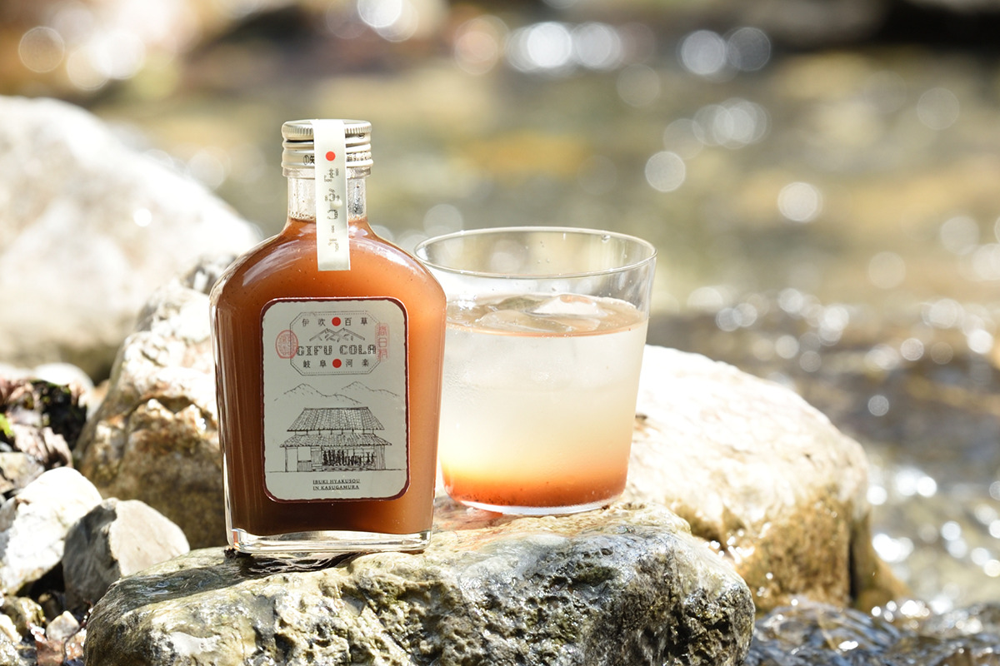
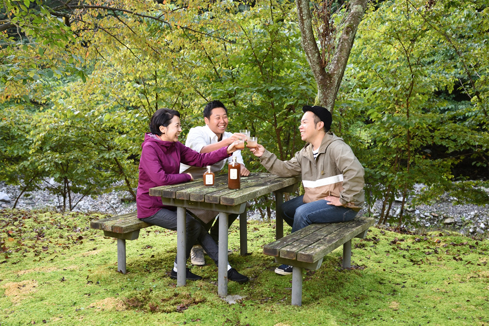
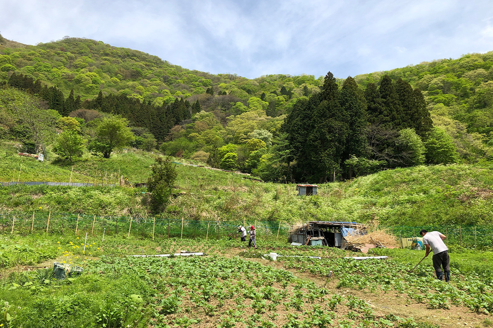
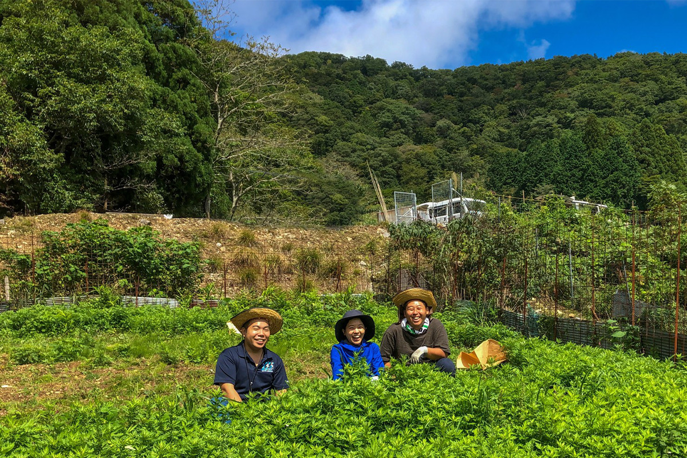
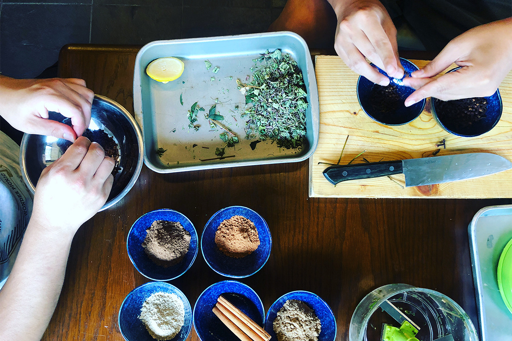
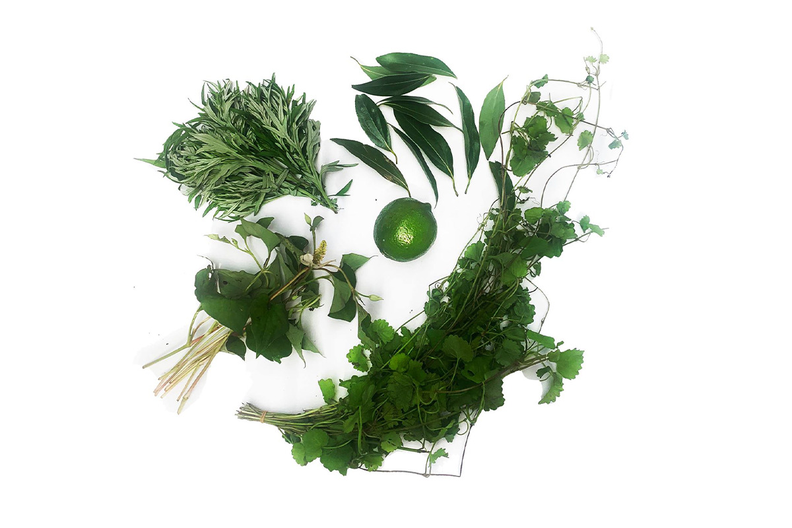
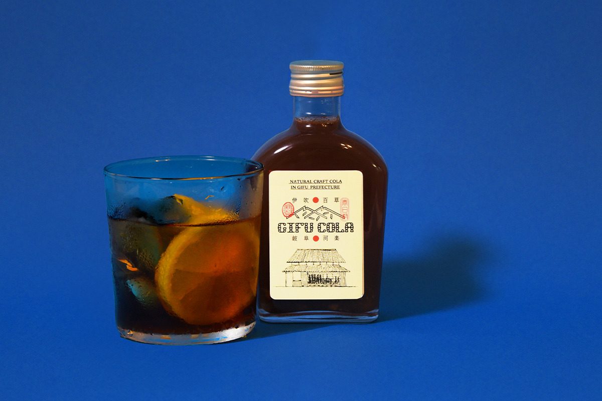

Префектура Гифу · Ибигава · напитки
GIFU COLA: крафтовая кола на травах с горы Ибуки, где когда-то разбил сад Нобунага

Когда трое молодых людей из Гифу уехали учиться и работать в большие города, там их чаще всего спрашивали: «А Гифу это где?» Вернувшись домой, они решили рассказать о родных местах через напиток и сварили колу из горных трав.
Начало
«А что есть в Гифу?»

Каори Идзумино, Осаму Катаяма и Томонори Сии выросли в Гифу и, как многие их сверстники, уехали из дома после школы или ради работы. В мегаполисах их удивило, как мало люди знают о родной префектуре: «Гифу? А что там вообще есть?» Обидно было всем троим.
Ближе к тридцати они вернулись и заново объехали префектуру. Оказалось, что вокруг огромная живая природа, а в каждой долине свои обычаи и свои сокровища. Так у каждого из троих появилась мысль донести всё это до молодого поколения, а форму для неё они нашли в напитке.
У каждого из троих своя дорога домой. Каори родилась в Огаки, десять лет прожила в Токио, Киото и Вьетнаме, а вернувшись, в 2021 году работала в программе поддержки сельских районов в городке Ибигава и рассказывает о нём и о всей префектуре. Осаму родился в городе Гифу; в детстве он попал в больницу и понял, что здоровье не дано навсегда. Он учился ресторанному делу в Токио, в 28 лет начал собственное дело и возглавлял компанию to U organic, мечтая быть поваром, который связывает гостей с теми, кто выращивает продукты. Томонори из Ибигавы: в 16 лет ему диагностировали болезнь Крона, в 25 он вернулся в родной городок. Тётя, которая выращивает лекарственные травы, унаследованные от предков, рассказала ему, что главное богатство этих мест это травяная культура. В 2021 году он заведовал кафе kitchen marco и рассказывал о растениях и местных традициях в Ибигаве и за пределами префектуры.
Травы
Забытое богатство гор

Одно из сокровищ Гифу это лекарственные травы: префектура издавна была крупным центром их сбора. Когда-то травы шли в дело каждый день, но со временем их стали пить и есть всё реже, люди почти перестали ходить в горы, и городки, жившие травами, заметно поутихли.
Вернуть травы в повседневную жизнь хотели все трое, хотя сами поначалу почти ничего о них не знали. Учиться пришлось по ходу дела, и чем больше они узнавали о травах и родных местах, тем сильнее их это затягивало.

Префектуру Гифу делят на пять областей: Хида, Тюно, Тоно, Гифу и Сэйно, и у каждой свой характер. Для первой колы основатели выбрали Сэйно на западе префектуры и травы горы Ибуки. Дальше они хотят делать колу вместе с каждой из областей, чтобы из этих частей сложилась большая GIFU COLA. По их словам, это способ передать дальше то, что знали предки: взять старую мудрость и рассказать о Гифу по-новому.
Кола
От аптекаря к крафту

Вкусы людей становятся разнообразнее, и вслед за крафтовым пивом в моду вошли напитки малых партий, среди них крафтовая кола. Колу привыкли считать вредной, но, как говорят, начиналась она с тонизирующего напитка, который американский аптекарь смешал из пряностей. К 2021 году производителей, которые возвращаются к этому началу, стало заметно больше, и колу снова пьют как напиток для бодрости и красоты.
Формула крафтовой колы проста: орех колы, от которого и пошло название, пряности и никаких добавок. Из этого варят сироп, и у каждого производителя он получается со своим характером.
История
Сад Нобунаги на горе Ибуки
GIFU COLA варят на травах бывшей деревни Касуга, которая вошла в городок Ибигава. Именно отсюда, как считают, по Гифу и разошлось разнообразие лекарственных растений. В XVI веке Нобунага Ода, по совету португальских миссионеров, устроил на горе Ибуки сад лекарственных трав; об этом говорят исторические записи, а всего там, по преданию, росло около 280 видов растений.
Местные жители издавна берегли здоровье травяными отварами. В каждом доме составляли свою смесь и пили её каждый день под названием «хякусо-тя», «чай ста трав». Гору Ибуки называют «горой-матерью», и в этом святом для травников месте всегда чувствовали особую силу.
О лекарственных травах обычно говорят двояко: полезно, но горько и пить трудно. Чтобы убрать эту преграду, создатели выбрали из множества трав четыре: полынь ёмоги, будру, хауттюйнию и японский коричник. Получилась кола, которую с удовольствием пьёт кто угодно.

Травы дают чистое, лёгкое послевкусие, а пряности уравновешивают их, поэтому колу спокойно пьют и взрослые, и дети. Сироп разводят газированной водой или молоком, а ещё он хорошо сочетается с виски, вином и джином.

Её можно пить дома во время кофейной паузы, взять с собой в поход или на пикник или просто устроить себе маленький праздник с друзьями и семьёй.
GIFU COLA
- Сайт
- gifucola.com